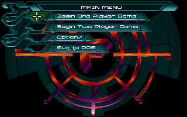
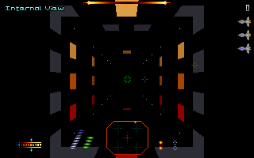

名稱：終極任務 (Pyrotechnica，英文版) 簡介：Psygnosis 1995年出品的第一人稱太空船射擊遊戲，和「天旋地轉（Descent）」類似 [待補]。   保護：無 備註：電腦速度不可太快，否則可能會偵測不到音效卡而當機。 操作： 上下左右 = 改變飛行方向 Alt = 發射主武器（綠色能量條） Space = 發射副武器（藍色能量條） M = 查看關卡地圖 E = 切換視角 End = 遊戲選單

